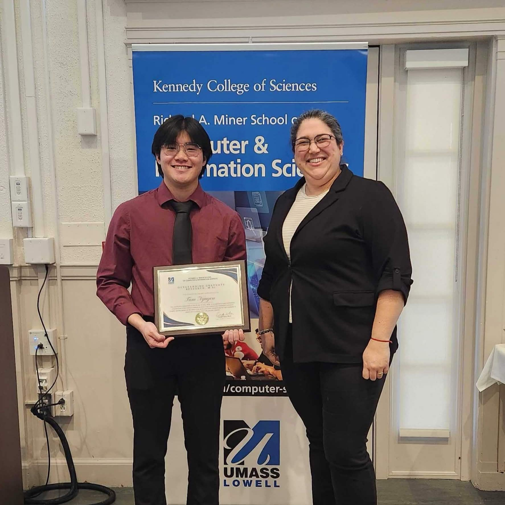
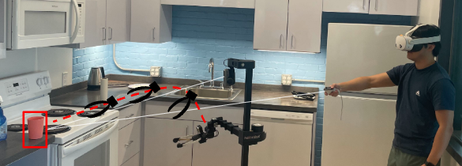

Jan 2026 — Dec 2026
University of Massachusetts Lowell
Master's, Computer Science
GPA: 3.75
ROBOTICS · COMPUTER VISION · REINFORCEMENT LEARNING
Computer Science graduate student and researcher interested in robotics, computer vision, augmented reality, and intelligent systems.
I'm a Computer Science graduate student at the University of Massachusetts Lowell with a focus on robotics and intelligent systems graduating December 2026.
My work has involved developing interfaces for visualizing robot planning and movement, working with ROS2 and robot platforms, computer vision, and augmented reality.
I enjoy working at the intersection of software, robotics, and human-computer interaction.
Master's, Computer Science
GPA: 3.75
Bachelor's, Computer Science
GPA: 3.913
Research Assistant in Robotics
Research Undergrad Experience
Immersive Scholar
Oct 2024 — Mar 2026
Research study exploring human preferences for robotic movement using multi-objective evaluation across different factors.
Collaborated with PhD student Brendan Hertel on research that resulted in a published paper on the study.
Automatic estimation and evaluation of multi-objective human preferences for Learning from DemonstrationAcknowledged in UMass Lowell's Richard A. Miner School of Computer & Information Sciences for research work regarding augmented reality and assistive robotics.


Developing an augmented reality interface for visualizing robot intent and planned movement during household tasks.
The system explores how robot plans and movements can be communicated to humans through an intuitive visual interface.
Developed a CNN model to recognize American Sign Language accurately in real-time.
Used PyTorch with AdamW as an optimizer and categorical cross-entropy for the loss function.
Evaluated model performance using latency, accuracy, a confusion matrix, and F1 scores.
I'm interested in opportunities involving robotics, computer vision, reinforcement learning, and intelligent systems.